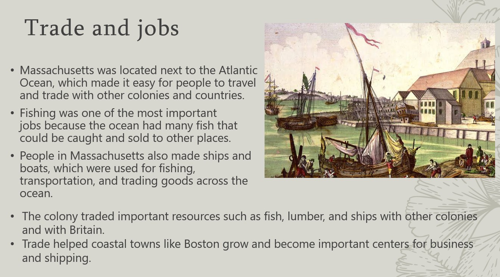

Introduction To My Website
This website is going to show my skills learned in my Informatics class that Mr. Albonetti has taught me. It is going to showcase my home page and my resume.
About Me
My name is Grayson Lepper, I live in Fishers, Indiana. I am persuing my education at Fishers Highschool, home of the Tigers, outside of school I like to hang out with my friends and family. I work at Emagine Movie Theater and I'm an executive member for the club Riley Dance Marathon at Fishers Highschool. I have lived in Fishers and been enrolled in the HSE school system my entire life. I am very grateful for my friends, family, and opportunities I have had growing up in Fishers. I am also planning on studying the major of finance in college.
Picture of Me

Project 1

This project was my final for Business Management. I was researching the company Takomo Golfand I had to make a 15 slide presentation. This was a bg part of my final so I had to do the presentation over a 2 week span. I ended up getting an "A" on it.
Project 2

This is my APUSH project my group and I were advertising for people to move to the colony Massechusetts like we were in he 1700s. My group consisted of Madi, Josh, Evan, and I. The presentation took around 1 week to do just because of all he research that we had to do. We also got an "A" on this project. When we were talking in front of the class we did not reach the time limit so that is why we got points off. I used this website to help me research.
I certify that the content included in this portfolio/website is my own original work (or is cited accurately) and accurate to my knowledge. Work included which was conducted as part of a team or other group is indicated and attributed as such the other team members are named and a true description of my role in the project is included. GRAYSON LEPPER
Layout by Bootstrap